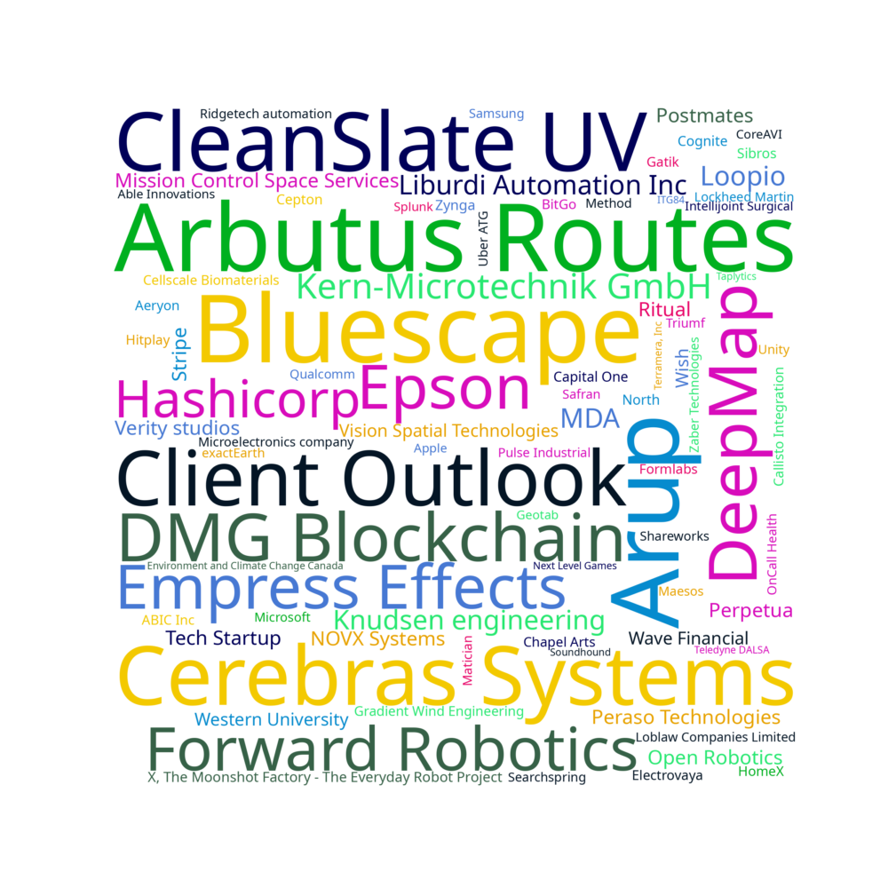
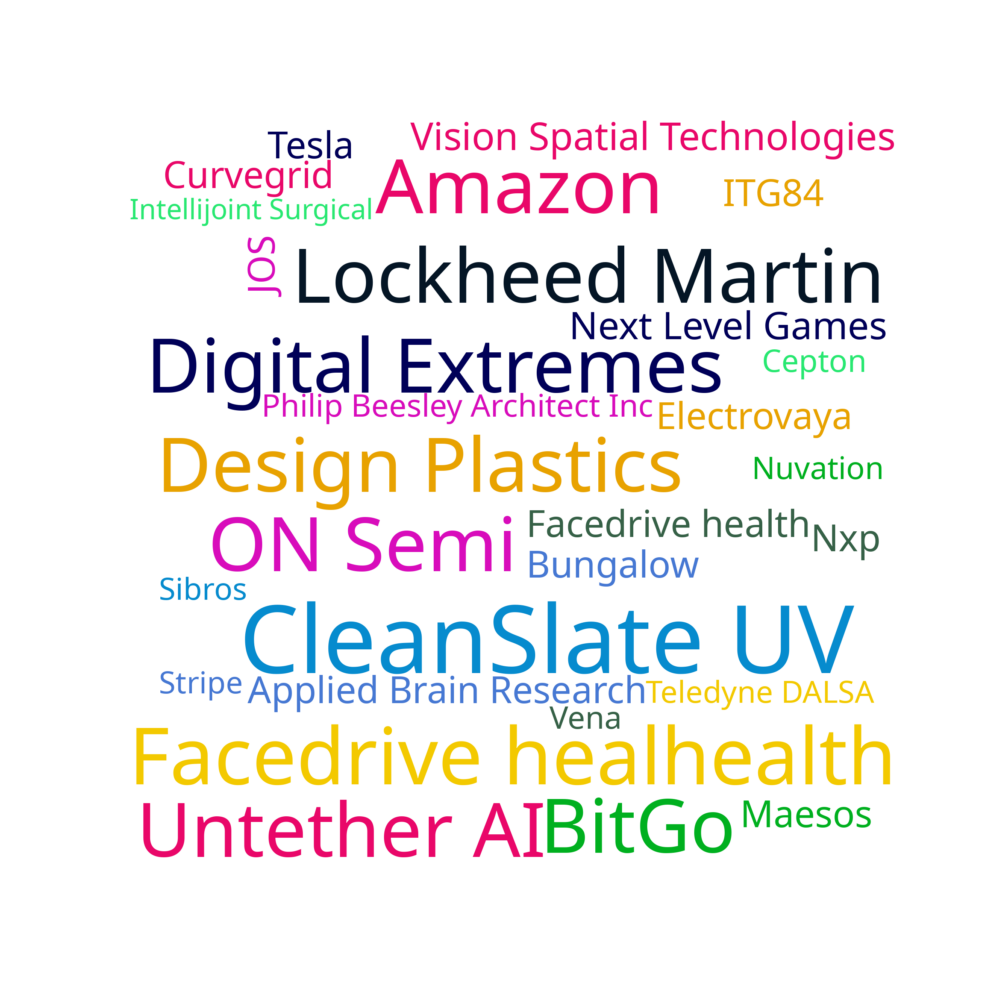

Did you do a co-op placement this term?
3-5% of respondents didn't do a co-op placement between terms 3 and 6. The University reduced the minimum required co-op terms required to graduate from five to four, and then further to three because of COVID.
Cumulative Average vs. Hourly Pay
This interesting trend continues from the 2020 class profile where students who had the lowest cumulative grades had the highest pay for the first work term. The trend reverses by the fifth and sixth co-op and there's a weak positive relationship between grades and pay.
Co-op Hourly Salaries (CAD)
As students got more experienced, the amount they got remunerated increased as well
Gender vs. Co-op Pay
A pleasant surprise! For the most part, the average male and female salaries were equal to each other. This is excellent news, but the full time salaries did have a significant difference as visible on the Future Plans page
Pay by Type of Work over Co-op Terms
Since people had co-ops where they performed more than one type of work, the salary for those positions are included in all the different types of work that they did. Therefore, if someone made $35/hour doing firmware and hardware work, the averages for both firmware and electrical include an entry for $35
How much does the type of work you do affect salary?
This is a crude multiple regression to find what effect different types of work has on salary. Take these data with a grain of salt, but positive numbers mean that it generally increased your salary compared to the average if you were doing that kind of work, and negative numbers means it decreased your salary to do that kind of work. Overall, Robotics, ML/AI and Product Management were typically associated with higher salaries. The fifth co-op term weird things happened where some trends reversed
Co-op Hours Per Week
Generally, people worked fourty hours per week. As responsibilities increased, more people worked slightly longer in the fifth and sixth co-ops. Some people had particularly busy co-op terms, with someone working 80 hours a week in first year!
Co-op Term Ratings
Generally, people liked their co-ops more as the terms went on. This is probably a combination of having the requisite experience to get the roles that people were looking for, as well as people figuring out what they like and what they do not
Co-op Stress
On the other hand, self-reported stress increased as the co-op terms went on. This is probably due to increased responsibilities. It never gets easier 😢
How'd you find your co-op?
The amount of people in the continuous round of WaterlooWorks consistently decreased, as they were more desirable to employers as experience grew. Naturally, more and more people returned to previous co-ops as the terms went by.
Co-op Location
Most people didn't end up going to California for co-ops, probably due to the pandemic disrupting the terms where most people usually go to California. The University actually did not allow work outside of Canada to count as a credit at the beginning of the pandemic, which might have influenced people's decisions along with the public health situation. Remote work sprung out of nowhere due to the pandemic too
Location vs. Hourly Pay
American pay was significantly higher than Canadian pay
Type of Work by Co-op Term
These add up to more than 100% of the class population since people did multiple functions in jobs. Many, many people did software work at their jobs. As the years went by, more people got mechanical or hardware focused jobs
Remote Percentage
Naturally, remote work increased after COVID-19 came to Canada
Co-op Rankings
Lots of people got outstanding ratings on their co-ops, more than 50% after the third co-op. Is the class just really good compared to other co-op students or is there ranking inflation? I leave that analysis as an exercise to the reader.
Co-op Companies
We've worked at a lot of places!
Good Co-ops

These are companies that received an average student rating of greater than eight.
Stressful Co-op Companies

These companies received an average stress level of greater than seven.